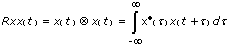
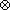
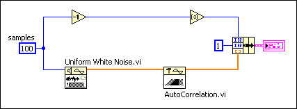
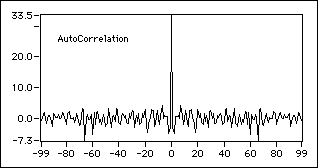
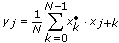
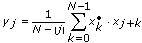
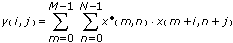

Computes the autocorrelation of the input sequence X. Wire data to the X input to determine the polymorphic instance to use or manually select the instance.
normalization specifies the normalization method to use to compute the autocorrelation of X.
0
none (default)
1
unbiased
2
biased
Rxx is the autocorrelation of X.
error returns any error or warning from the VI. You can wire error to the Error Cluster From Error Code VI to convert the error code or warning into an error cluster.
normalization specifies the normalization method to use to compute the autocorrelation of X.
0
none (default)
1
unbiased
2
biased
Rxx is the autocorrelation of X.
error returns any error or warning from the VI. You can wire error to the Error Cluster From Error Code VI to convert the error code or warning into an error cluster.
error returns any error or warning from the VI. You can wire error to the Error Cluster From Error Code VI to convert the error code or warning into an error cluster.
error returns any error or warning from the VI. You can wire error to the Error Cluster From Error Code VI to convert the error code or warning into an error cluster.
The autocorrelation Rxx(t) of a function x(t) is defined as

where the symbol  denotes correlation.
For the discrete implementation of the AutoCorrelation VI, let Y represent a sequence whose indexing can be negative, let N be the number of elements in the input sequence X, and assume that the indexed elements of X that lie outside its range are equal to zero, as shown in the following relationship:
xj = 0, j < 0 or jN
Then the AutoCorrelation VI obtains the elements of Y using the following formula:
The elements of the output sequence Rxx are related to the elements in the sequence Y by
Rxxi = yi–(N–1)
for i = 0, 1, 2, … , 2N–2
Notice that the number of elements in the output sequence Rxx is 2N–1. Because you cannot use negative numbers to index LabVIEW arrays, the corresponding correlation value at t = 0 is the Nth element of the output sequence Rxx. Therefore, Rxx represents the correlation values that the AutoCorrelation VI shifts N times in indexing. The following block diagram shows one way to display the correct indexing for the AutoCorrelation VI.

The following graph results from the preceding block diagram.

In order to make the autocorrelation calculation more accurate, normalization is required in some situations. This VI provides biased and unbiased normalization.
Biased normalization
If the normalization is biased, LabVIEW applies biased normalization as follows:

for j = –(N–1), –(N–2), …, –1, 0, 1, … , (N–2), (N–1), and
Rxx(biased)i = yi–(N–1)
for i = 0, 1, 2, … , 2N–2
Unbiased normalization
If the normalization is unbiased, LabVIEW applies unbiased normalization as follows:

for j = –(N–1), –(N–2), …, –1, 0, 1, … , (N–2), (N–1), and
Rxx(unbiased)i = yi–(N–1)
for i = 0, 1, 2, … , 2N–2
2D Autocorrelation
The AutoCorrelation VI computes two-dimensional autocorrelation using the following equation:

for i = –(M–1), …, –1, 0, 1, … , (M–1) and j = –(N–1), …, –1, 0, 1, … , (N–1)
where M is the number of rows of matrix X and N is the number of columns of matrix X. The indexed elements of X that lie outside its range are equal to zero, as shown in the following relationship:
 Add to the block diagram
Add to the block diagram Find on the palette
Find on the palette


 N
N